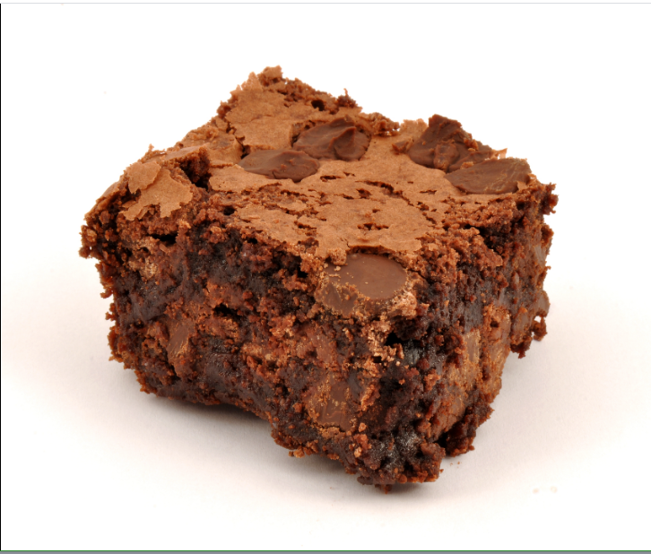
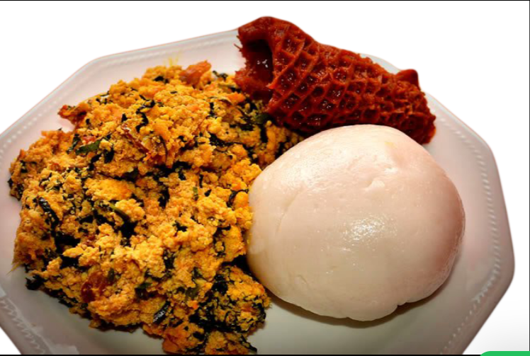
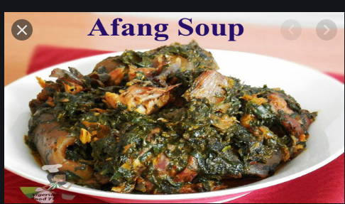
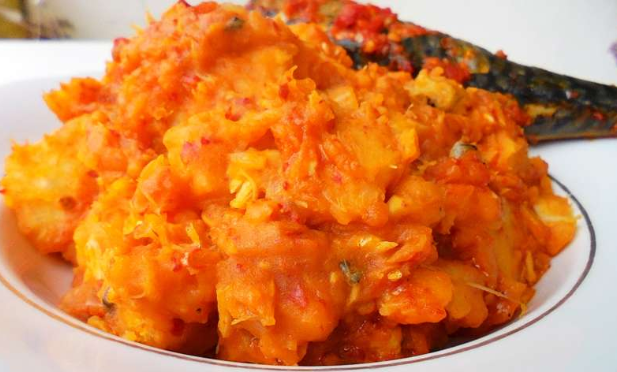

My Favourite Recipes
This is a collection of my favourite recipes.

A. BROWNIES
This is my favourite recipe
List Of Ingredients
Steps:
- Put flour inside a bowl
- Crack three eggs
- Pour 250g of nutella in the bowl
- Mix it
- Pour the mixture into a baking pan
- Bake at 175 degrees celsius for 15 minutes
- Enjoy!

B. EGUSI SOUP WITH SEMO
List Of Ingredients
- Egusi
- Palmo+i++l
- Assorted Meat
- Dry fish/Stock fish/crayfish
- Yellow pepper/Onions
- Uziza leaf
Steps:
- Season your assorted meat with maggi,salt and onions to taste
- Heat your palm oil and add your mashed egusi with onions
- Stir for few minutes then add your meat stock with your dryfish,stockfish
- Add your grinded pepper,crayfish
- Add your maggi and salt to taste
- Stir and allow it cook for few minutes
- Add your leaf and allow to steam
- Finally! Soup is ready
- With your hot water prepare your semolina
- Serve and Enjoy!
C. YAM & EGG SAUCE
List Of Ingredients
- Egg
- Fresh tomatoes and pepper,onions
- Carrot,Green pepper
- Yam
Steps:
- Cut all your vegetables in desired size
- Mix your desired number of eggs
- Fry your oil,add your onion,tomato,red pepper
- Stir and allow to steam
- Add your carrot and green pepper and stir
- Add maggi,salt to taste,curry and thyme(optional)
- Add your whisked egg and stir
- Egg sauce is ready
- Slice your yam in desired shape and boil with salt to taste
- Yam and Egg sauce ready to serve and enjoy.

D. AFANG SOUP
List Of Ingredients.
- Afang-leaf
- Water-leaf
- Assorted meat
- Periwinkle
- Stockfish/Crayfish/Dryfish
- Palm-oil/maggi/salt
Steps:
- Season your washed assorted meat,stockfish,dryfish
- Wash your waterleaf to avoid sand
- Steam your palmoil and add your waterleaf with sliced onions immediately
- Add your assorted meat stock,grinded pepper and crayfish
- Add your maggi and salt to taste,add a good amount of water
- Allow to cook for few minutes
- Soup is ready!

E. YAM PORRIDGE
List Of Ingredients.
- Yam
- Palm-oil
- Dry-fish
- Fresh Pepper
- Maggi/salt
Steps:
- Cook your yam to be half-done
- When almost done add your dryfish,crayfish(optional)
- Add your pepper,maggi and salt to taste
- If too dry you can add little water,then allow it cook for few more minutes
- Part of the yam can be mashed if you want it so
- Food is ready!